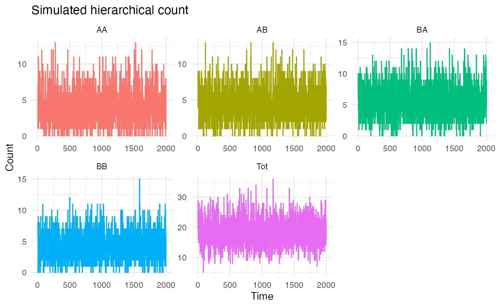
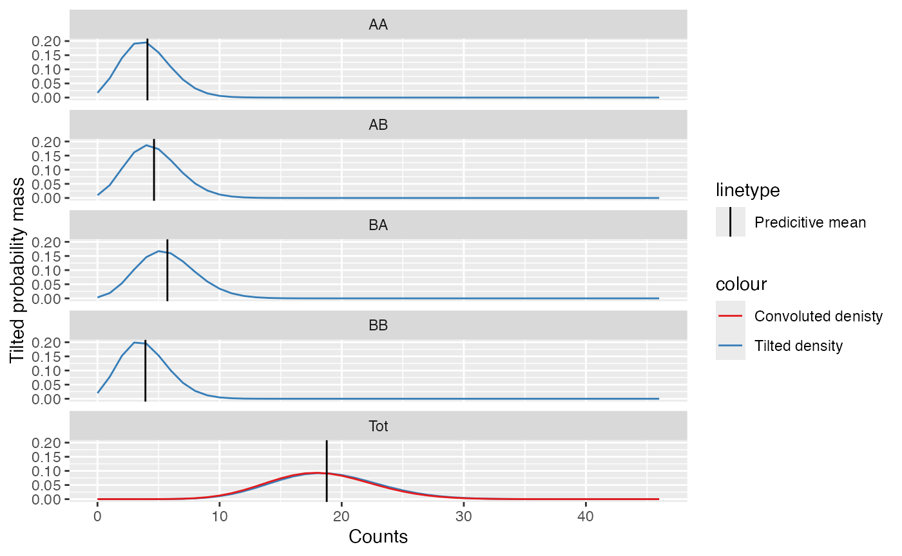

Poisson_example.RmdThis vignette demonstrates how to:
glm from the .The example is intentionally simple (two bottom-level series and one aggregate), but the workflow generalizes to larger hierarchies.
In this example, we use a simple simulated hierarchical count dataset
with four bottom-level series. Each series is generated from a Poisson
GLM with quadratic dependence on a covariate x.
We consider a two-level hierarchy:
AA, AB, BA,
BB)Total)
with noise.## ── Attaching core tidyverse packages ──────────────────────── tidyverse 2.0.0 ──
## ✔ dplyr 1.2.0 ✔ readr 2.1.6
## ✔ forcats 1.0.1 ✔ stringr 1.6.0
## ✔ ggplot2 4.0.2 ✔ tibble 3.3.1
## ✔ lubridate 1.9.5 ✔ tidyr 1.3.2
## ✔ purrr 1.2.1
## ── Conflicts ────────────────────────────────────────── tidyverse_conflicts() ──
## ✖ dplyr::filter() masks stats::filter()
## ✖ dplyr::lag() masks stats::lag()
## ℹ Use the conflicted package (<http://conflicted.r-lib.org/>) to force all conflicts to become errorsThis shows the counts recorded over time for each node in the hierarchy.
hts_data_long <- tidyr::pivot_longer(poisson_sim_data, cols = -c(Time), names_to = "Level", values_to = "Value")
ggplot2::ggplot(hts_data_long, ggplot2::aes(x = Time, y = Value, color = Level)) +
ggplot2::geom_line() +
ggplot2::labs(title = "Simulated hierarchical count", x = "Time", y = "Count") +
ggplot2::theme_minimal() +
ggplot2::theme(legend.position = "none") +
ggplot2::facet_wrap(~Level, scales='free')
We now fit Poisson GLMs to each bottom-level count
series (AA, AB, BA,
BB). Each model uses an AR(1) model and is estimated in a
rolling one-step-ahead forecasting framework.
At each forecast origin:
t − 1
lambda) is estimated in-samplelambda is produced
N <- nrow(poisson_sim_data) # 2000 rows
m <- 4 # bottom series
n_series <- ncol(poisson_sim_data[,-1])
n_train <- c(1:c(N-50)) # withhold the last 50 observations for validation
test_indices <- c(length(n_train)+1):N
n_samples <- length(test_indices)
nodes <- c("Tot", "AA", "AB", "BA", "BB")
sum_bottom <- c("AA", "AB", "BA", "BB")
top_y_vals <- seq(from = 0, to = c(max(poisson_sim_data$Tot)+10))
ally <- poisson_sim_data[,-c(1)] # remove covariates
# Containers for results
lambda_list <- list()
fitted_list <- list()
poiss_GLM_reg <- list()
for(t in seq_along(test_indices)) {
my_train <- seq_len(test_indices[t]-1)
lambda_est <- matrix(NA, nrow = length(my_train) + 1, ncol = length(nodes))
fits <- matrix(NA, nrow = length(my_train) + 1, ncol = length(nodes))
colnames(lambda_est) <- colnames(fits) <- nodes
poiss_reg <- list()
for(i in nodes) {
y_train <- poisson_sim_data[my_train, ] %>% pull(all_of(i))
# Fit tsglm on training series
fit <- tscount::tsglm(y_train, model = list(past_obs = 1), link = "log")
poiss_reg[[i]] <- fit
# Fitted values for the training period
lambda_est[1:length(my_train), i] <- fitted(fit)
# One-step-ahead forecast
lambda_est[length(my_train)+1, i] <- predict(fit, n.ahead = 1)$pred
# Simulate Poisson counts based on lambda
fits[, i] <- rpois(length(lambda_est[, i]), lambda = lambda_est[, i])
}
lambda_list[[t]] <- lambda_est
fitted_list[[t]] <- fits
poiss_GLM_reg[[t]] <- poiss_reg
}At the end of this procedure:
poiss_GLM_reg: contains the fitted Poisson GLMs at
forecast time t.lambda_list: contains estimated Poisson means (lambda)
for each series, including the one-step-ahead value.fitted_list: contains simulated predictive draws from
the Poisson distribution.We estimate a coherent top-series probability mass function (PMF)
using a convolution and Poisson distributions. As inputs into this
process we use: - the top-level series (A)
estimates - the bottom-level series (AA,
AB, BA, BB) estimates - A fine
grid over which the density exists
We will generate PMFs for the withheld data points to validate of our method. You can loop over all years of you wish by updating the code to do so.
# Apply to predictions
for(t in 1:length(test_indices)) {
# lambda values
lambda_vals <- as.data.frame(lambda_list[[t]])
mu_theory <- as.vector(unlist(lambda_vals[test_indices[t], ])) # predictive mean
lambda_bseries <- lambda_vals[test_indices[t],sum_bottom]
# fitted values
fitted_vals <- tibble::as_tibble(fitted_list[[t]])
fitted_bseries <- fitted_vals[test_indices[t],sum_bottom]
# Construct tilted pmf for top and bottom series
f_y_bottom <- matrix(NA, nrow = length(top_y_vals), ncol = length(lambda_bseries))
f_tilt <- matrix(NA, nrow = length(top_y_vals), ncol = length(mu_theory))
nu_star <- vector()
# Construct densities
for(k in 1:length(lambda_bseries)) {
# Bottom series
f_y_bottom[,k] <- sapply(top_y_vals, function(x) {
mean(stats::dpois(x = x, lambda = as.numeric(lambda_bseries[k])))})
}
f_y_top <- Poisson_convolution(z_values = top_y_vals,
lambda_input = as.numeric(lambda_bseries),
point=TRUE)
f_y <- cbind(f_y_top, f_y_bottom)
# Tilt density
for(k in 1:length(mu_theory)) {
tilted_dens <- tilt_density(mu_theory[k], top_y_vals, f_y[,k], discrete=TRUE) # tilt density
f_tilt[,k] <- tilted_dens$f_tilted
}
nu_star <- c(tilted_dens$nu_star, nu_star)
colnames(f_tilt) <- colnames(fitted_vals)
nu_exp[[t]] <- nu_star
f_tilde_exp[[t]] <- f_tilt # density of top level
}The figure presents the predictive density formed by convolving the estimated bottom-level Poisson distributions. The resulting density is subsequently tilted so that its expectation matches the corresponding one-step-ahead predictive mean, ensuring coherence between the full predictive distribution and the point forecast.
t=50
t_idx <- test_indices[t]
# Extract predictive means at time t
lambda_mat <- lambda_list[[t]]
lambda_t <- lambda_mat[t_idx, ]
lambda_bottom <- lambda_t[-1]
# density of convolution
conv_top_dens <- dpois(top_y_vals, sum(lambda_bottom))
conv_plot <- data.frame(
y = top_y_vals,
pmf = conv_top_dens,
node = "Tot"
)
# tilted density
df_plot <- data.frame(
y = rep(top_y_vals, ncol(f_tilde_exp[[t]])),
pmf = as.vector(f_tilde_exp[[t]]),
node = rep(colnames(f_tilde_exp[[t]]), each = length(top_y_vals))
)
means_df <- data.frame(
node = names(lambda_t),
mean = lambda_t
)
ggplot2::ggplot() +
ggplot2::geom_line(data = df_plot, ggplot2::aes(x = y, y = pmf, col='Tilted density')) +
ggplot2::geom_line(data = conv_plot, ggplot2::aes(x = y, y = pmf, col='Convoluted denisty')) +
ggplot2::geom_vline(data = means_df,
ggplot2::aes(xintercept = mean, linetype = "Predicitive mean")) +
ggplot2::facet_wrap(~ node, nrow=5) +
ggplot2::scale_colour_brewer(palette="Set1") +
ggplot2::labs(x = "Counts",
y = "Tilted probability mass")